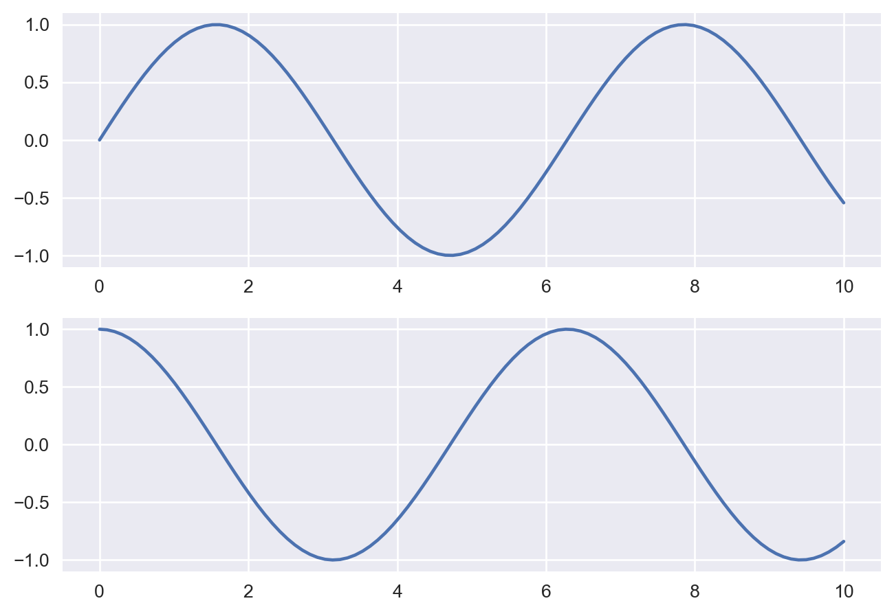
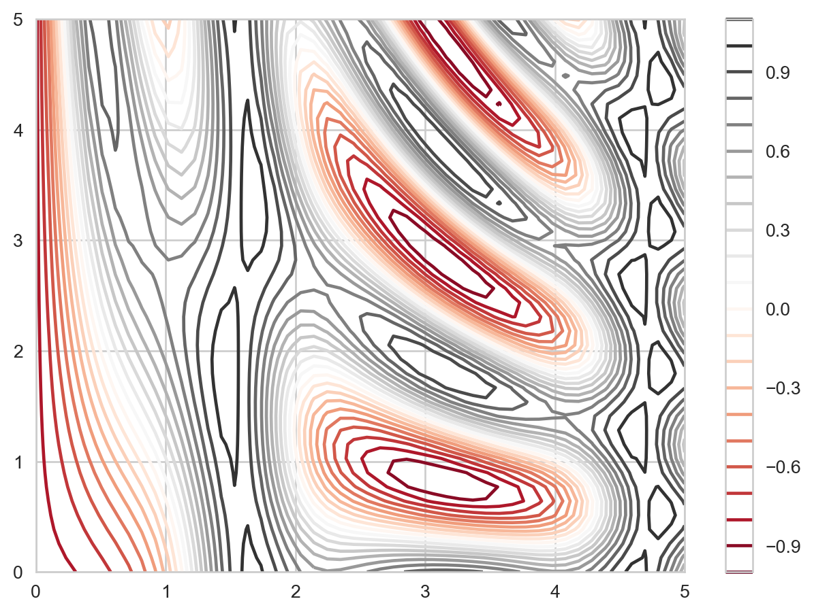

7.1 Cơ bản về matplotlib
matplotlib là thư viện được sử dụng rộng rãi trong Python khi trực quan hóa dữ liệu.
C:\Users\Hoang Duc Anh\AppData\Local\Temp\ipykernel_7740\4269312434.py:2: MatplotlibDeprecationWarning:
The seaborn styles shipped by Matplotlib are deprecated since 3.6, as they no longer correspond to the styles shipped by seaborn. However, they will remain available as 'seaborn-v0_8-<style>'. Alternatively, directly use the seaborn API instead.
matplotlib có chứa nhiều style khác nhau. Ta có thể kiểm tra với câu lệnh sau
['Solarize_Light2',
'_classic_test_patch',
'_mpl-gallery',
'_mpl-gallery-nogrid',
'bmh',
'classic',
'dark_background',
'fast',
'fivethirtyeight',
'ggplot',
'grayscale',
'seaborn-v0_8',
'seaborn-v0_8-bright',
'seaborn-v0_8-colorblind',
'seaborn-v0_8-dark',
'seaborn-v0_8-dark-palette',
'seaborn-v0_8-darkgrid',
'seaborn-v0_8-deep',
'seaborn-v0_8-muted',
'seaborn-v0_8-notebook',
'seaborn-v0_8-paper',
'seaborn-v0_8-pastel',
'seaborn-v0_8-poster',
'seaborn-v0_8-talk',
'seaborn-v0_8-ticks',
'seaborn-v0_8-white',
'seaborn-v0_8-whitegrid',
'tableau-colorblind10']Giải thích: - pyplot tạo một object plot. Các câu lệnh của plt sẽ thay đổi các thành phần trong plot (add, remove, modify…). - plt.show() sẽ hiển thị object cuối cùng sau khi đã thực hiện toàn bộ câu lệnh. - Khi thực hiện option %matplotlib inline, sẽ không cần sử dụng plt.show()
7.2 Điều chỉnh chi tiết plot
7.3 Hai cách xây dựng biểu đồ
7.3.1 Matlab style
Cách này được thực hiện tương tự như matlab, cách thức thực hiện như sau: - Tạo biểu đồ - Tạo subplot trong biểu đồ, xác định tọa độ và add biểu đồ con
# Tạo figure
plt.figure()
# Tạo khu vực 2 hàng, 1 cột, 1 panel
plt.subplot(2,1,1) # Add plot vào panel số 1
plt.plot(x, np.sin(x))
plt.subplot(2,1,2) # Add plot vào panel số 2
plt.plot(x, np.cos(x))
plt.show()
Lưu ý: Hai biểu đồ phải được đặt cùng trong 1 cell
7.3.2 Object oriented style
Sử dụng plt.subplots(), kết quả trả ra là 2 object dạng figure và axes trong matplotlib. - figure là 1 đối tượng của class plt.Figure, bao gồm tất cả thành phần của biểu đồ (trục, label, đồ thị) - axes là khung thể hiện của figure
Hai câu lệnh sau là tương đương
7.4 Điều chỉnh các thành phần cơ bản
7.4.1 Biểu đồ đường
C:\Users\Hoang Duc Anh\AppData\Local\Temp\ipykernel_7740\2414357448.py:1: MatplotlibDeprecationWarning:
The seaborn styles shipped by Matplotlib are deprecated since 3.6, as they no longer correspond to the styles shipped by seaborn. However, they will remain available as 'seaborn-v0_8-<style>'. Alternatively, directly use the seaborn API instead.
7.4.2 Điều chỉnh xlim, ylim

7.4.3 Điều chỉnh tên
7.4.4 Điều chỉnh chú giải
7.4.5 Methods ax
Lưu ý: Các phương pháp sử dụng hàm plt và methods axes là tương đương nhau
plt.xlabel()→ax.set_xlabel()plt.ylabel()→ax.set_ylabel()plt.xlim()→ax.set_xlim()plt.ylim()→ax.set_ylim()plt.title()→ax.set_title()
7.5 Các loại biểu đồ thường dùng
7.5.1 Scatter plot
7.5.2 Sử dụng plt.scatter
plt.scatter cho phép linh hoạt hơn so với plt.plot nhưng tốc độ xử lý sẽ chậm hơn
7.5.3 Contour plot
<matplotlib.colorbar.Colorbar at 0x1d9ee8816f0>
7.5.4 Histogram
7.5.5 Text
Ta có thể còn annotate bằng cách dùng method ax.annotate
7.6 Tài liệu tham khảo
- Python Data Science Handbook - Chương 4